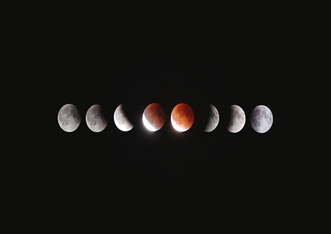
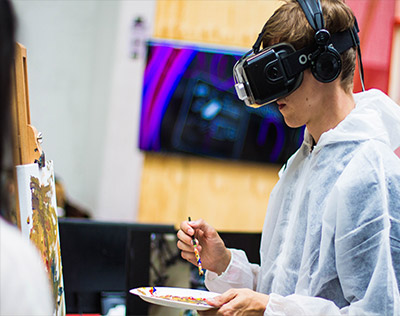

Cosmology
Explore the wonders of our cosmos. Our fantastic exhibition, ‘The Sky Above Us’, explores the night sky and what we can see and know about the universe around us. We’ll locate the various constellations and galaxies that can be seen and learn a bit about the early navigators who used the stars to travel by. Follow the journey of our solar exploration: from early Arab traders, to Galileo’s telescope, to the latest
Biology and Medicine
From micro-organisms to the human body, major breakthroughs in biology are offering us unique insights into the great wonders of the tiny world. For many people their life expectancy is much longer and their quality of life much improved, thanks to the growth of our understanding of medicine. Over a series of exhibits we explore the history of medicine and take a look at some major breakthroughs including the discovery of penicillin and the first heart transplant. Many of our great medicinal discoveries have come not only from the lab, but also from observing animals in the wild. Often our fellow creatures have beat us to it.
Robotics and AI
The information revolution is here and robotics and artificial intelligence are the science of the future. From useful home applications of AI to industrial uses of robotics, the future is here. You can even say hello and shake the hand of Rob the Robot.consequat.
Ecology
As we learn more and more of the impact humans are having on the planet, the more important it becomes that scientists explore how to create a sustainable
Special events and Exhibitions
News
Visiting Professor of AeronauticsIt is our pleasure to announce that Prof Sheila Widnall from the Massachusetts Institute of Technology will be delivering 3 lectures on the development of aeronautics and where the future lies in this exciting ‘space’.
Night in the MuseumGet your family together for an exciting night in the museum as you sleep over beside dinosaurs and science displays. Bring your own sleeping bag and get ready to rough it as we go exploring the wonders of science.
Energetica Exhibition on LoanOn loan from the NEMO Science Museum in Amsterdam, the Energetica exhibition is coming to the Community Science Museum. It’s a series of installations that allow visitors to experience the power of the elements as we harness them. From solar energy powering lighting, to ‘Wind Island’ that shows how turbines are able to use and control wind to create power.
Get involved
Support the Museum
There are various ways you can support the museum. Donations are very welcome and are an important way we keep this museum open and accessible to the whole community.